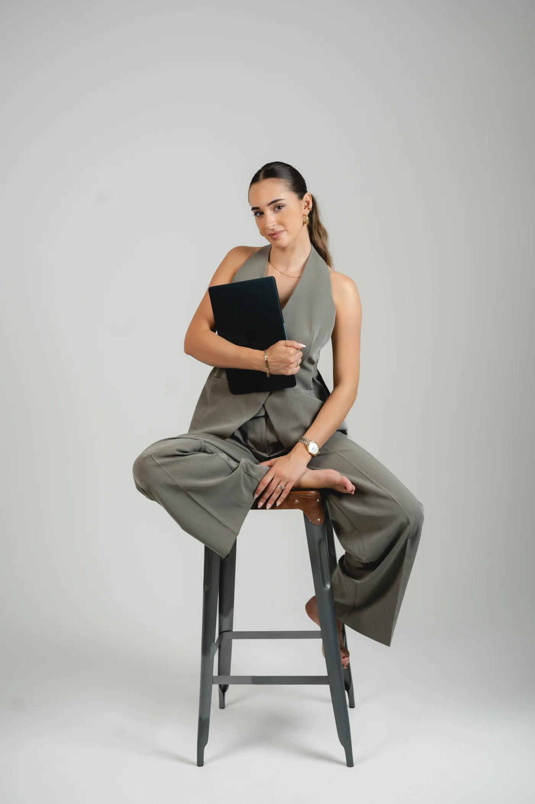

The Story Artist

Hi, ich bin Didem — Hochzeitsfotografin mit einer Liebe für ehrliche Emotionen, stilvolle Ästhetik und zeitlose Bildsprache.
Meine Arbeit verbindet moderne Ästhetik mit authentischer Emotionalität. Inspiriert von Licht, Bewegung und echten Verbindungen entstehen Bildwelten mit Tiefe, Ruhe und zeitloser Eleganz. Jede Hochzeit wird individuell erzählt – ehrlich, stilvoll und voller Atmosphäre.
Mit einem feinen Gespür für Details und einer ruhigen Präsenz halte ich Augenblicke fest, die oft ganz nebenbei passieren: ein Blick, eine Berührung, das Gefühl eines Moments. Mein Ziel ist es, Erinnerungen zu schaffen, die sich natürlich anfühlen und dennoch wie aus einem Editorial wirken.
„Ich fotografiere Hochzeiten nicht nur so, wie sie aussehen — sondern so, wie sie sich anfühlen."
Von intimen standesamtlichen Begleitungen bis hin zu exklusiven Ganztageshochzeiten entstehen Bilder, die modern, emotional und zeitlos zugleich sind. Für Paare, die echte Momente lieben und Wert auf Ästhetik, Emotion und Storytelling legen.
Für mich geht es bei Hochzeiten nicht nur um Fotos. Es geht darum, Erinnerungen zu erschaffen, die euch auch Jahre später wieder genau in diesen einen Moment zurückversetzen.
Genau deshalb bedeutet Fotografie für mich so viel. Bilder bewahren Erinnerungen, Emotionen und Augenblicke, die niemals wieder genau so zurückkommen werden.
Didem Kanteper
— a few things you might want to know
Wie früh sollten wir buchen?
Da ich nur eine begrenzte Anzahl an Hochzeiten pro Jahr begleite, empfehle ich eine frühzeitige Anfrage — idealerweise 9 bis 18 Monate vor eurem Datum. Für besonders begehrte Termine und Saisons freue ich mich über eine noch frühere Kontaktaufnahme.
Reist du auch für Hochzeiten?
Ja, sehr gerne — ich begleite Hochzeiten in ganz Deutschland sowie im europäischen Ausland. Reisekosten werden je nach Entfernung und Aufwand individuell besprochen.
Welche Augenblicke werden am Hochzeitstag oft übersehen?
Viele Paare erleben ihren Tag wie im Flug und nehmen die kleinen Augenblicke oft gar nicht bewusst wahr. Zum Beispiel den stolzen Blick der Eltern, das Lächeln der Großeltern, die Freudentränen von Freunden oder die kleinen Gesten zwischen ihnen selbst. Genau diese Details werden später oft zu den wertvollsten Erinnerungen.
Was ist dein Fotografiestil?
Editorial, dokumentarisch, emotional. Ich fotografiere das, was wirklich passiert — ungekünstelt, ehrlich und mit einem Gespür für Licht, Komposition und Timing. Meine Bilder sollen zeigen, wie sich euer Tag angefühlt hat — nicht nur wie er aussah.
Wann erhalten wir unsere Bilder?
Ihr erhaltet eure sorgfältig bearbeiteten Bilder in 8 bis 12 Wochen nach Auswahl der Bilder — präsentiert in einer eigenen Online-Galerie.